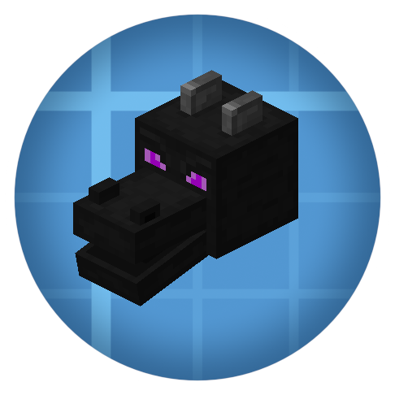
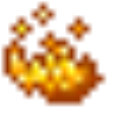
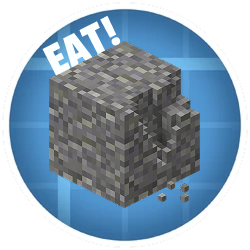
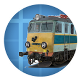
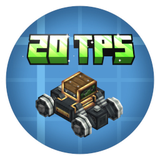
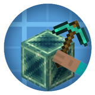
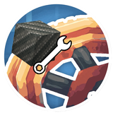
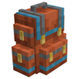
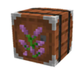

全部模组MODS
每个模组有自己的目录，点进去只看这个模组的东西。想看某个模组的全部物品，进它自己的目录。
已收录
机械动力 · Createcreate
740 个物品与方块，1302 条配方，116 段官方 Ponder 教程。本体图鉴。
Dreams & Desirescreate_dd
153 个物品、338 个方块、11 种流体。补金属、加构件、加机壳，还有一堆能喝的东西。
Create Gogglescreategoggles
把工程师护目镜做进头盔里：十种目镜头盔、五种装甲储罐、一套护目镜纹饰。
Fishing Bobber Detectorbobberdetector
只有一个方块：盯着鱼竿浮标，鱼咬钩时输出红石信号。配部署器可做全自动钓鱼机。
Create for twinkscreatefortwinksforge
把玄武岩、深板岩、滴水石、凝灰岩变成可自动化的产线——石头不再靠挖。
Create: Enchantment Industrycreate_enchantment_industry
把附魔拆成流水线：烈焰附魔台、词缀模板、液态经验、附魔蛋糕，38 件。
Create: Train Utilitiestrainutilities
列车党补件：无框玻璃、各国线路标、车门与喇叭零件，186 个方块。

Create: Halitosiscreatehalitosis
不加物品，只加 13 条转化：把主世界材料「吐」成末地版本。
创造物品类（合集）8 mods
Creative / Creative Recipes / Creative Assembly / Cogwheels / Glue / Kinetics Balanced / ATM10 TTS 等——把创造模式的东西降级成可获得。归为一类，一页看完。
Create: Liberatecreateliberate
把 Helldivers 那套「战略配备」搬进机械动力：96 件物品，58 张战略配备权限卡 + SEAF 装备 + 地狱炸弹，51 条配方。
Create: Superheatedsuperheated
下界合金再升级：岩浆灌下界合金锭 → 超热锭 → 三锭搅成武士刀，另有一瓶超载药剂。3 件物品 2 条配方。
Create: Sweets & Treatscreatesweetsandtreets
甜食产线：苹果糖浆、巧克力、岩糖，以及甜甜圈/曲奇/派/纸杯蛋糕等 66 个物品与方块。
Create: Liberatecreateliberate
战术装备与战备物资：权限卡、战略配备、雷区等，把军事风带进机械动力。
Create: Cold Sweatcreate_cold_sweat
给生存加一层环境：体温、口渴、空气质量随维度与天气变化，配套物件用来降温、补水、净化空气。

Create: Heat JScreate_heat_js
基于 KubeJS 的热量机制：给方块和配方加温度要求，本身是脚本库，玩法取决于整合包怎么调用。
Create: More Featurescreate_more_features
一批独立零件和功能方块，直接插进 Create 产线里用，不改变原有玩法。
Create: More Seatscreate_more_seats
只做一件事：加更多样式的座椅，放列车车厢或建筑里都能坐。
Create: Meat Blocksmeatblocks
把肉做成方块：生肉块、熟肉块、压缩肉、切片机与培根机，31 个物品。
Create ReAutomatedcreatereautomated
一批可自动化的零件与机器，走和本体不同的合成路线，35 个物品。

EatAndesiteeatandesite
按住右键啃安山岩：每口消耗饥饿度、短暂获得缓慢，没有新增物品。
Create ReAutomated: Tracescreatereautomatedtraces · 二级附属
ReAutomated 的补充：1 个追踪器工具，用来定位产线连接。硬依赖 Create ReAutomated（mods.toml 里是必需依赖），所以它属于「二级附属」——挂在 ReAutomated 之下，不是直接挂 Create。
Create: Artificial Meat
把肉类生产搬进工厂：原料经过几道加工变成各种肉块与肉制品。
Create: Feather
原版羽毛只能靠杀鸡。这个模组给了一条 Create 风格的路线：羊毛漂白后经风箱吹、再进磨盘，产出羽毛。
Create: Heat Pipe
给 Create 的加热系统加了一种可以铺管道运输的热介质，不用再把燃烧室和机器挤在一起。
Create: Leather
把皮革做成可自动化的产物：原料走 Create 的加工链，中间产物再压/搅成成品皮革。

Create: Realism

Create: Threaded Trains
Kinetic Pixelkinetic_pixel
Create: Treadmillcreatetreadmill
Create: Unbreakable Armorcreate_unbreakable_armor
Unbreakable Netherite Pickaxeunbreakable_netherite_pickaxe
Create: Unbreakable Toolscreate_unbreakable_tools_series
Create: Break It All

Create: Break Levitite

Create: D&D Bore Block Fix
Create: Reactive Stress
Create: Bread and Beyondcreate_bread_and_beyond
Create: Propulsioncreatepropulsion

Sophisticated Backpacks Create Integration
Create: Screw It!screwnstuff

Sophisticated Storage Create Integration
Create: Escalatedescalated
Create: Integrated Farmingcreate_integrated_farming
Simulated Coasterssimulatedcoasters
Create: Ultimate Factory
Create Crafts & Additionscreateaddition
Create: Steam 'n' Railsrailways
关系
现在 9 个附属模组都直接挂在「机械动力」下面：关系图里从中心拉一条实线过去，点小球（或那条线）进各自的介绍页。
附属模组之间的配方联动（虚线）目前没有核实到，所以关系图上暂时不画。真出现互相加配方的模组时，再补一条虚线。
说明
本体目录只放机械动力的东西；附属模组的物品只出现在它自己的页面里，不会混进本体目录。 以后每加一个附属，这里多一张卡。